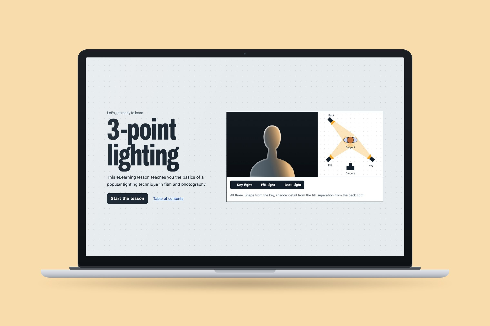
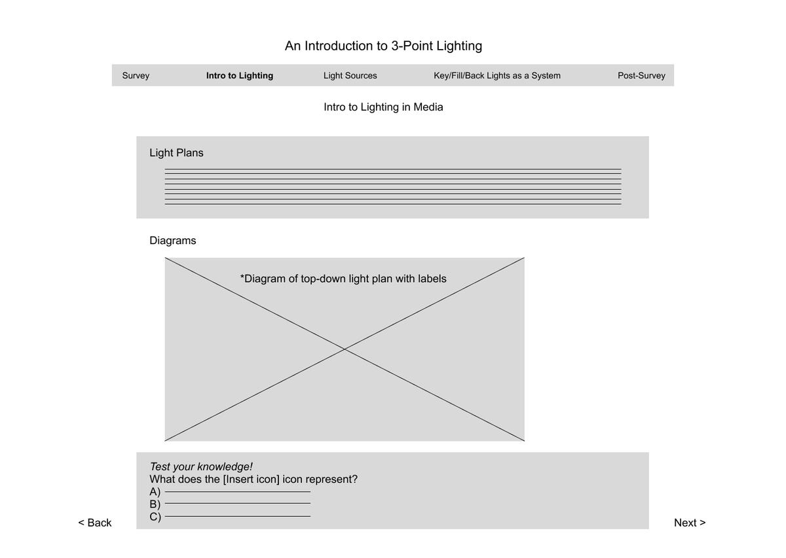
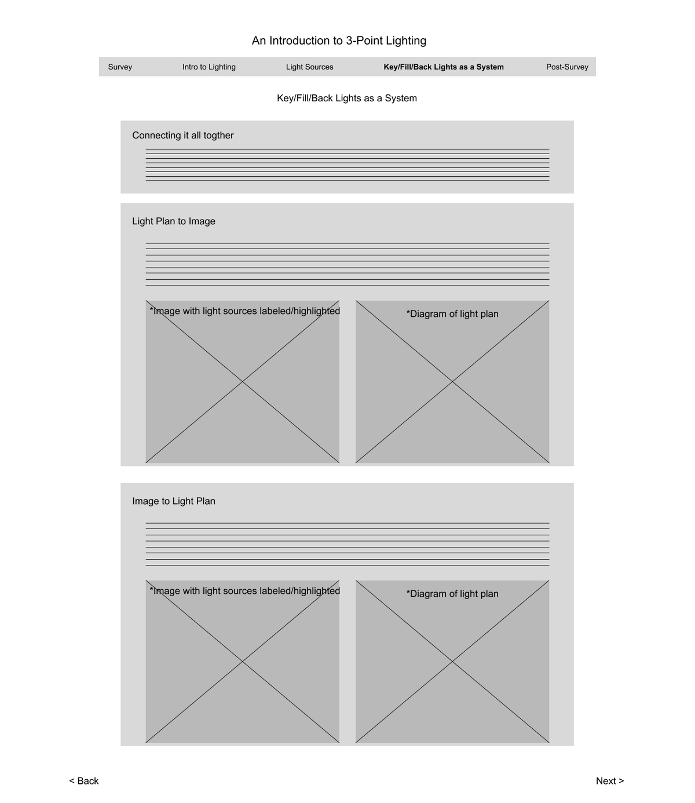
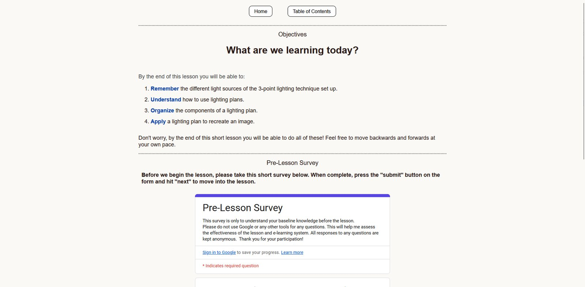
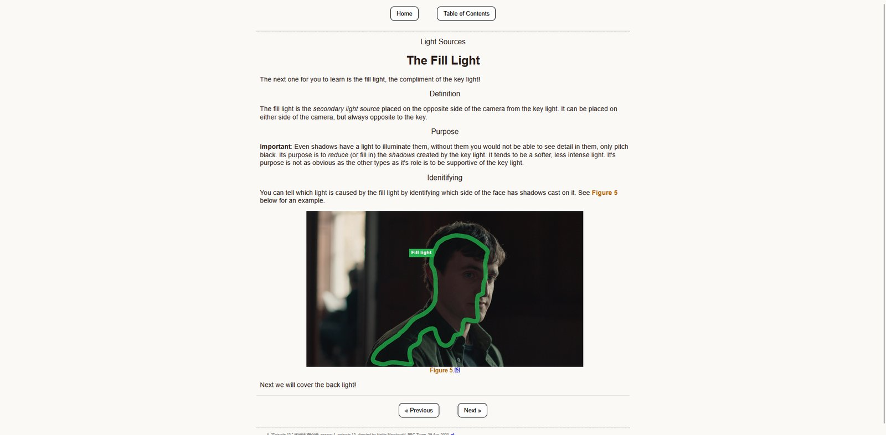
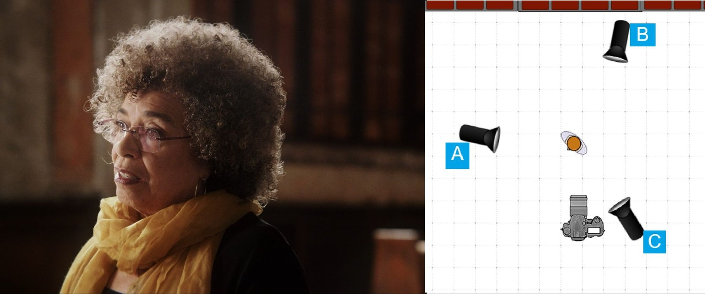
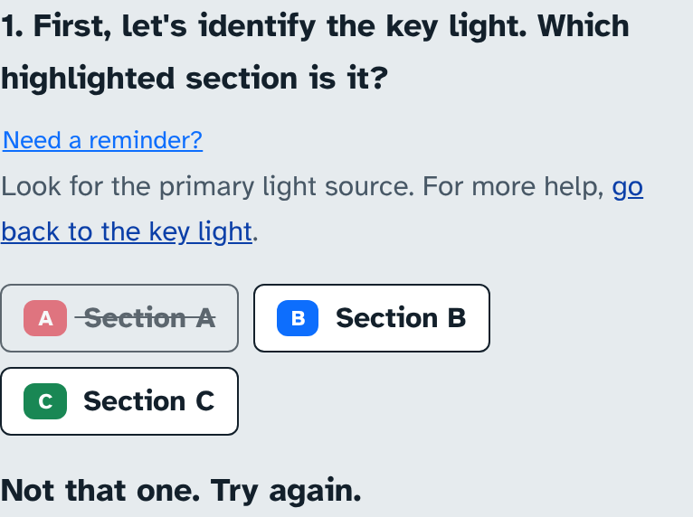
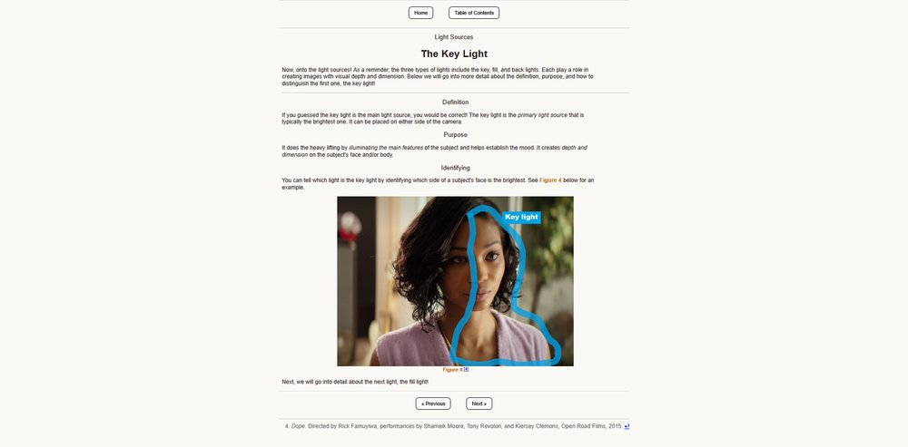
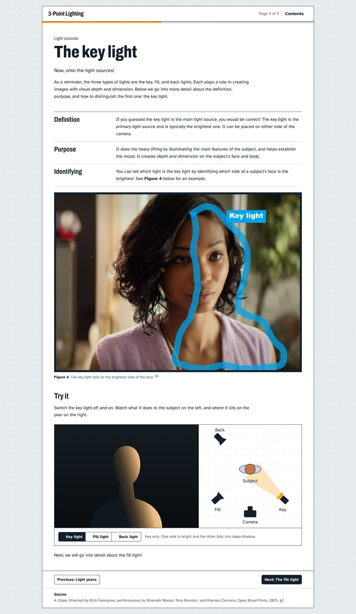
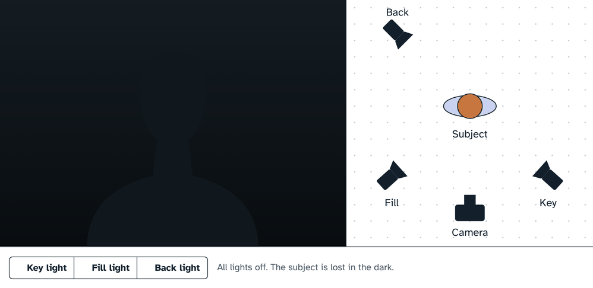

Three-Point Lighting | E-Learning Lesson
Teaching beginners to read, and recreate, three-point lighting.

Project Overview
As a class project for HCI 520 (Learner-Centered Design), I designed, built and tested a 30-minute e-learning lesson that teaches beginner photographers and filmmakers three-point lighting. In a pre/post study with 12 learners, average scores rose from 66% to 90% (effect size 1.52, p = 0.0036), and 10 of 12 learners improved.
I then redesigned the site to target the skill learners still struggled with and to make the lesson a little more game-like. The redesign has not been tested with learners yet.
View the Live, Updated VersionThe updated version hasn’t been tested with learners yet. The first version, the one I tested, is still live at 3-pointlighting.netlify.app.
The Challenge
Design a self-paced lesson that measurably improves what learners can do, not just what they have read.
Lighting is a skill people usually learn on set by watching someone else, so the lesson had to turn a hands-on craft into something a beginner could practice on a screen. I picked three-point lighting because it draws on my undergraduate background in film and photography, and because it is visual and procedural. That made it a good test of whether interface choices could support higher-order skills like reading a lighting plan and recreating a shot.
Goals
Move learners past memorizing terms toward analyzing and applying lighting plans, and prove it with a pre/post test. I wrote four learning objectives (LOs). By the end of the lesson, learners will be able to:
- Remember the key, fill and back light.
- Understand how to use a top-down lighting plan.
- Organize the components of a lighting plan.
- Apply a lighting plan to recreate an image.
My Design Process
- Explore
- Research
- Ideate
- Prototype Iterate
- Test Iterate
Methods
- Learner Analysis
- Bloom’s Taxonomy
- Wireframing
- Pre/Post Testing Iterate
- Paired t-test
Research
Research focused on one job: defining exactly what learners should be able to do, and how I would know they could do it.
Learner Analysis
The lesson is for learners in an introductory photography or cinematography course. They are motivated by the visual arts, and they already know that cameras need light, how to take a picture, and the basics of exposure (ISO, aperture, shutter speed).
Scoping Down
My proposal also covered the inverse square law and contrast ratios. I cut both: they belong later in a course, and removing them brought the lesson from 30 to 45 minutes down to 20 to 30. Every remaining topic had to serve one of the learning objectives.
Defining Success with Bloom’s Taxonomy
I classified each objective on Bloom’s revised taxonomy (Krathwohl, 2002). Plotting them on the grid confirmed the lesson would move learners from remembering toward analyzing and applying.
| LO | Learners will be able to… | Cognitive process | Knowledge type |
|---|---|---|---|
| 1 | Remember the key, fill and back light | Remember (1.1, 1.2) | Factual, conceptual |
| 2 | Understand how to use a top-down lighting plan | Understand (2.1) | Conceptual, procedural |
| 3 | Organize the components of a lighting plan | Analyze (4.2) | Conceptual |
| 4 | Apply a lighting plan to recreate an image | Apply (3.2) | Procedural |
Research → Design: Each objective came with an assessment idea before any screen was designed, so the test and the lesson were planned together.
Ideation
I structured the lesson as scaffolding: each section introduces only what the next one needs, and practice gets less guided as learners move toward the objectives at the top of the grid.
Lesson Flow
- Welcome and objectives, with an embedded pre-test
- Introduction: what three-point lighting is and why it is used, with key terms introduced early
- Light plans: how to read a bird’s-eye diagram of subject, camera and lights, then a quick practice question
- Light sources: one page each for key, fill and back light, covering definition, purpose and how to spot it in a frame
- Breaking it down: a worked example where learners identify each light in a film still, then map those lights onto a lighting plan
- Post-test: the same questions as the pre-test, reordered
Design Decisions Tied to Principles
Segmenting
One light type per page keeps new information on a screen within working memory.
Contiguity
Labels sit inside the image, with text directly above or below, so learners never hunt for what the text refers to.
Pre-training
Key terms are named on the first lesson page, so later pages build on vocabulary learners already have.
Worked examples & practice
Worked examples with optional hints, then less help, move learners from recognizing lights to placing them.
Personalization
A conversational, second-person tone makes a technical topic less intimidating.
Coherence & learner control
Nothing on screen the objectives don’t need. The table of contents links to every page except the post-test, so learners can go back freely without skipping to the test.
Wireframes
I sketched six wireframe screens in the design proposal. One idea carried through to the final site: show a frame without labels first so learners analyze it themselves, then reveal the labeled version.


Prototyping the First Version
Approach
I hand-coded the first version in HTML and CSS as an 11-page site, deployed it to Netlify, and used it as a working prototype to test with real learners. Its purpose was learning outcomes, so visual design was not a priority.
Key Features
- Real film stills as teaching material. Frames from films like Middle of Nowhere and Priscilla (sourced from ShotDeck) were paired with lighting plans made in Lighting Diagram Maker, so learners practiced on the kind of images they want to make.
- Worked examples with fading support. On “Identifying lights,” learners pick out the key, fill and back light in a film still. Optional hints link back to the relevant page, and “click to reveal” shows the answer with its reasoning. “Mapping lights” then uses the same still with less help and asks learners to place each light on a plan.
- Built-in measurement. The pre-test and post-test were Google Forms embedded in the first and last pages, with matching anonymous IDs so I could pair each learner’s scores.
The Test
Eight questions worth 14 points, each mapped to an objective. LO 1 had four recall and image questions. LO 2 had one “light plans are…” question. LO 3 asked learners to label a plan’s icons. LO 4 had two questions that matched lights in a film still to positions on its plan (Top Gun: Maverick and 13th).


Testing with Learners
Study Design
Twelve learners took the pre-test, the lesson and the post-test.
Metrics Tracked
- Paired pre- and post-test scores for each learner
- Item-level results, mapped to each learning objective
- Effect size (Cohen’s d) and significance (paired t-test)
Success Criteria
A statistically significant gain from pre-test to post-test, with improvement on every objective, including the higher-order ones.
Results
Ten of the 12 learners improved, one scored perfectly on both tests, and one dropped. The average told me the lesson worked. The item-level data told me where it worked, and that is what shaped the next version.
- Recall improved the most (LO 1). Every learner could identify the fill light after the lesson, compared with 4 of 12 before.
- One question measured nothing (LO 3). Everyone already labeled the plan’s camera, lights and subject correctly on the pre-test. A harder item is needed to show learning there.
- Transfer was the weak spot (LO 4). On the 13th plan, only one more learner got it right after the lesson. The errors that remained were mostly key and fill swapped on a plan (4 of 12 learners), including the one learner whose score dropped.
- One question was confusingly worded (LO 2). The “select all that apply” item with an “All of the above” option rose only from 4 to 8, and several wrong answers were partly right.
Limitations. The sample was small (12), and some participants were adjacent to the target audience rather than in it, so the effect size is probably inflated. The study measured immediate recall, not retention.
The forms were scored out of 14 points and rescaled to 10. For this case study I recomputed every score from the raw responses, because the pre-test form had graded question 1 against the wrong answer. The class report’s figures were 67%, d = 1.53 and p = 0.0047; the conclusion is the same.

What it pointed to: The lesson was strongest at recall and weakest at applying a plan to a new image. Learners needed a way to practice how lights change an image, not just read about it.
Implementing the Revised Site
Goal
The revised site adds the visual design the first version set aside, plus a layer of gamification aimed at the LO 4 practice gap: learners see in real time what changing the lights does to an image. It keeps the tested lesson flow but rebuilds how learners can interact with it in real time. Each major change answers a finding from testing or a discovered gap.
What Changed
| What testing or review showed | What changed in the revised site |
|---|---|
| The report called for “a way to have learners interact with a simulation to support LO 3 and 4” | An interactive light rig. A two-panel view shows the subject as the camera sees it beside its overhead lighting plan. Learners switch the key, fill and back light on and off, and a caption explains each combination. |
| Learners still swapped key and fill on plans (4 of 12) | The rig puts key and fill on opposite sides of the camera and shows what each does to the face. It appears on each light-source page and lights up in sequence on the home page. (Linking the rig to this error is my inference; it was not tested.) |
| “Click to reveal” feedback was rated only partial, and my presentation called for dynamic feedback | Answer buttons with real feedback. A wrong pick is struck through with “Not that one. Try again.” The right one turns green and shows why. “Need a reminder?” hints link back to the relevant page. |
| Learners analyze a frame best before seeing labels | Labeled/unlabeled toggle on the opening film still, replacing two stacked images |
| The embedded forms needed scrolling and reminders to submit | An “open in a new tab” fallback and a clearer submit reminder under each form |
| My own outline note: name the Next and Previous buttons | Wayfinding: named buttons (“Next: The fill light”), “Page X of 9,” and a redesigned table of contents |
Visual & Accessibility
I moved the layout to Bootstrap 5 so it works on phones. Body text is set in Atkinson Hyperlegible (designed for low-vision readers) with Archivo headings. A dotted “grid paper” background echoes the lighting plans. I also added a skip link, alt text on every film still, ARIA labels on the rig, a reduced-motion setting for the home animation, and footnoted film sources on every page.
Not Yet Validated
What it doesn’t do yet: The revised site has not been tested with learners, so I can’t claim it raises scores. Learners can switch lights on and off but can’t yet move them, which is what LO 4 needs most. The rig also doesn’t appear on the Mapping lights page, where that confusion shows up.

Before and After


The Light Rig
Learners switch each light and see the result on camera and on the plan at once.
Try it Here
Closing / Future Work
The biggest lesson was that an average can hide the story. A 24-point gain looked like success, but the item-level data showed the lesson was strongest at recall and weakest at the objective I cared about most: applying a plan to a new image.
- Design the test as carefully as the lesson. One question was already at ceiling and another was confusingly worded. Both made it harder to tell what the lesson actually taught.
- Match interactivity to the level of the objective. Static pages with click-to-reveal answers worked for recall. Higher-order goals needed something learners could act on, which led to the light rig.
- Plot objectives first, then write them. Placing each objective on Bloom’s grid before designing screens kept the lesson focused on four goals and lined the test up with them.
Next steps. Replace the LO 3 question with a harder one, then rerun the pre/post study with a larger group of beginners to see whether the revised site closes the LO 4 gap. After that, make the lesson more of a game: learners move lights around a 2D lighting plan and watch the result “on camera” as they go.
The Problem
Lighting is usually learned on set, by watching someone else.
The challenge was to turn that hands-on craft into a self-paced, 30-minute lesson that measurably improves what beginner photographers and filmmakers can do, like reading a lighting plan and recreating a shot, not just what they can recall.
The Solution
I designed, built and tested a lesson around four learning objectives, from naming the key, fill and back light up to applying a lighting plan to a new image, and measured it with a pre/post test.
Testing showed learners were weakest at applying a plan: many still swapped key and fill. So I redesigned the site around practice:
- An interactive light rig shows the subject as the camera sees it beside the overhead plan, as learners switch each light on and off.
- Answer buttons with real feedback strike through wrong picks, explain the right one and link back to hints.
- Clearer wayfinding with named Next buttons, page numbers and a redesigned table of contents.
The Outcome
Ten of the 12 learners improved. The redesigned site hasn’t been tested with learners yet; the next step is to rerun the study with a larger group of beginners to see whether it closes the gap in applying a plan.
View the Live, Updated Version